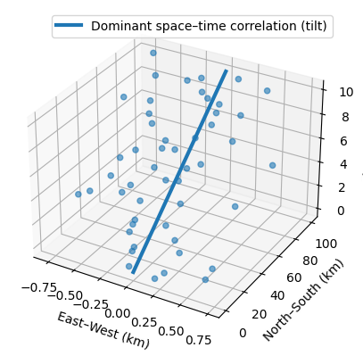
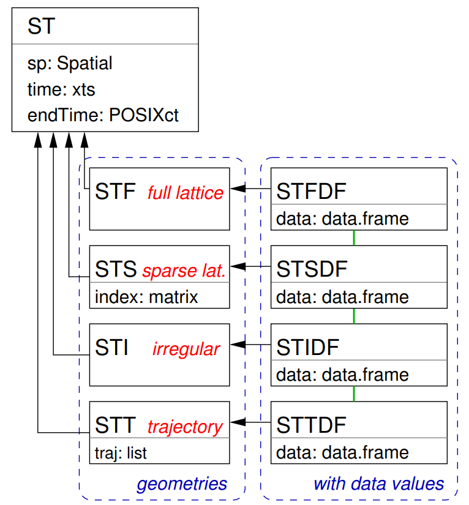
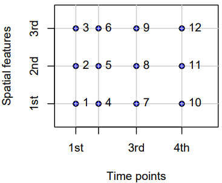
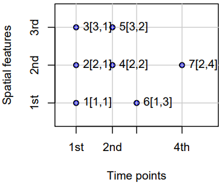
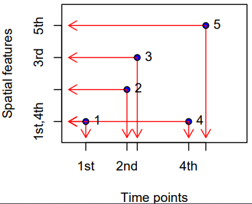
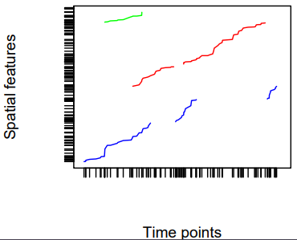
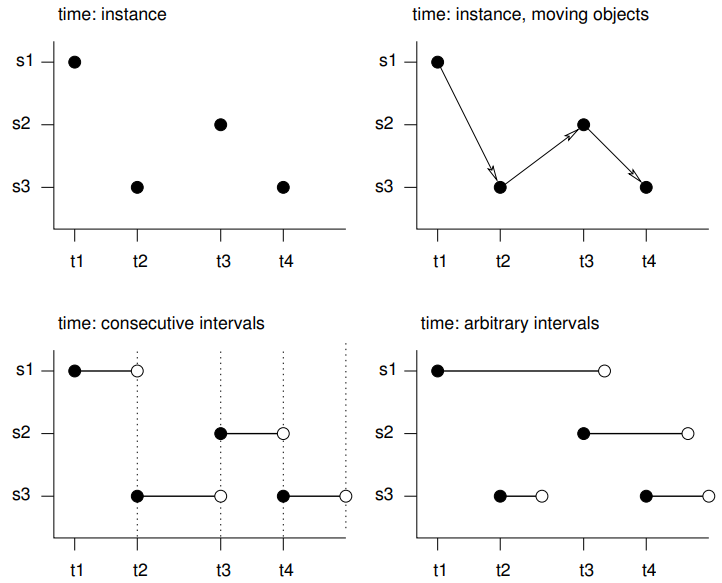
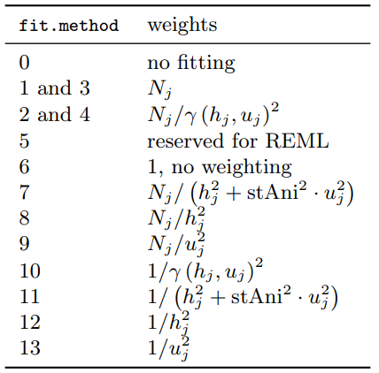

Spatio-Temporal
Misc
- Packages
- {cubble} (Vignette) - Organizing and wrangling space-time data. Addresses data collected at unique fixed locations with irregularity in the temporal dimension
- Handles sparse grids by nesting the time series features in a tibble or tsibble.
- {magclass} - Data Class and Tools for Handling Spatial-Temporal Data
- Has datatable under the hood, so it should be pretty fast for larger data
- Conversions, basic calculations and basic data manipulation
- {mlr3spatiotempcv} - Extends the mlr3 machine learning framework with spatio-temporal resampling methods to account for the presence of spatiotemporal autocorrelation (STAC) in predictor variables
- {rasterVis} - Provides three methods to visualize spatiotemporal rasters:
hovmollerproduces Hovmöller diagramshorizonplotcreates horizon graphs, with many time series displayed in parallelxyplotdisplays conventional time series plots extracted from a multilayer raster.
- {sdmTMB} - Implements spatial and spatiotemporal GLMMs (Generalized Linear Mixed Effect Models)
- {sftime} - A complement to {stars}; provides a generic data format which can also handle irregular (grid) spatiotemporal data
- {spStack} - Bayesian inference for point-referenced spatial data by assimilating posterior inference over a collection of candidate models using stacking of predictive densities.
- Currently, it supports point-referenced Gaussian, Poisson, binomial and binary outcomes.
- Highly parallelizable and hence, much faster than traditional Markov chain Monte Carlo algorithms while delivering competitive predictive performance
- Fits Bayesian spatially-temporally varying coefficients (STVC) generalized linear models without MCMC
- {spTimer} (Vignette) - Spatio-Temporal Bayesian Modelling
- Models: Bayesian Gaussian Process (GP) Models, Bayesian Auto-Regressive (AR) Models, and Bayesian Gaussian Predictive Processes (GPP) based AR Models for spatio-temporal big-n problems
- Depends on {spacetime} and {sp}
- {stars} - Reading, manipulating, writing and plotting spatiotemporal arrays (raster and vector data cubes) in ‘R’, using ‘GDAL’ bindings provided by ‘sf’, and ‘NetCDF’ bindings by ‘ncmeta’ and ‘RNetCDF’
- Only handles full lattice/grid data
- It supercedes the {spacetime}, which extended the shared classes defined in {sp} for spatio-temporal data. {stars} uses PROJ and GDAL through {sf}.
- Easily convert spacetime objects to stars object with
st_as_stars(spacetime_obj)
- Easily convert spacetime objects to stars object with
- Has dplyr verb methods
- {cubble} (Vignette) - Organizing and wrangling space-time data. Addresses data collected at unique fixed locations with irregularity in the temporal dimension
- Resources
- SDS, Ch.13
- Geodata and Spatial Regression, Ch. 14
- Spatial Modelling for Data Scientists, Ch. 10
- Spatio-Temporal Statistics in R (See R >> Documents >> Geospatial)
- Spatial and Temporal Statistics
- It’s kind of a brief overview of spatial and temporal modeling separately. The spatio-temporal section at the end is also brief and pretty basic.
- There are things such as HMMs and GPs that I’m not yet familar with which could be interesting.
- Papers
- INLA-RF: A Hybrid Modeling Strategy for Spatio-Temporal Environmental Data
- Integrates a statistical spatio-temporal model with RF in an iterative two-stage framework.
- The first algorithm (INLA-RF1) incorporates RF predictions as an offset in the INLA-SPDE model, while the second (INLA-RF2) uses RF to directly correct selected latent field nodes. Both hybrid strategies enable uncertainty propagation between modeling stages, an aspect often overlooked in existing hybrid approaches.
- A Kullback-Leibler divergence-based stopping criterion.
- Effective Bayesian Modeling of Large Spatiotemporal Count Data Using Autoregressive Gamma Processes
- Introduces spatempBayesCounts package but evidently it hasn’t been publicly released yet
- Amortized Bayesian Inference for Spatio-Temporal Extremes: A Copula Factor Model with Autoregression
- INLA-RF: A Hybrid Modeling Strategy for Spatio-Temporal Environmental Data
- Notes from
- spacetime: Spatio-Temporal Data in R - It’s been superceded by {stars}, but there didn’t seem to be much about working with vector data in {stars} vignettes. So, it seemed like a better place to start for a beginner, and I think the concepts might transfer since the packages were created by the same people. Some packages still use sp and spacetime, so it could be useful in using with those packages
- Spatio-Temporal Interpolation using gstat
Terms
- Anisotropy
Spatial Anisotropy means that spatial correlation depends not only on distance between locations but also direction.

- The size and color of circle represent rainfall values
- The figure (source) demonstrates spatial anisotropy with alternating stripes of large and small circles from left to right, southwest to northeast.
- Standard Kriging assumes isotropy (uniform in all directions) and uses an omnidirectional variogram that averages spatial correlation across all directions. Violation of isotropy can bias predictions; overestimate uncertainty in “stronger” directions (and vice versa); and the predictions will fail to capture patterns.
Spatio-Temporal Anisotropy refers to directional dependence in correlation that varies across both space and time dimensions
- Example: If you are mapping a pollution plume moving North at 10 km/h, the correlation structure is not just “longer in the North-South direction.”
- It is tilted in the space-time cube where time is the vertical in the 3d representation.
- A vertical correlation (no anisotropy) would start at the bottom of the line and be parallel to the z-axis (time)
- If you are measuring something that doesn’t move—like soil quality at a specific GPS coordinate—the time correlation is vertical
- With a pollution plume, the time correlation will “tilt” because pollution values will be more similar in different locations as time increases.
- It is tilted in the space-time cube where time is the vertical in the 3d representation.
- Example: If you are mapping a pollution plume moving North at 10 km/h, the correlation structure is not just “longer in the North-South direction.”
{kind=link}
Grid Layouts
- {spacetime} Classes
 - Full-Grids
- Each coordinate (spatial feature vs. time) for each time point has a value (which can be NA) — i.e. a fixed set of spatial entities and a fixed set of time points.
- Examples
- Regular (e.g., hourly) measurements of air quality at a spatially irregular set of points (measurement stations)
- Yearly disease counts for a set of administrative regions
- A sequence of rainfall images (e.g., monthly sums), interpolated to a spatially regular grid. In this example, the spatial feature (images) are grids themselves.
- Sparse Grids
- Only coordinates (spatial feature vs. time) that have a value are included (no NA values)
- Use Cases
- Space-time lattices where there are many missing or trivial values
- e.g. grids where points represent observed fires, and points where no fires are recorded are discarded.
- Each spatial feature has a different set of time points
- e.g. where spatial feaatures are regions and a point indicates when and where a crime takes place. Some regions may have frequent crimes while others hardly any.
- When spatial features vary with time
- Scenarios
- Some locations only exist during certain periods.
- Measurement stations move or appear/disappear.
- Remote sensing scenes shift or have different extents.
- Administrative boundaries change (e.g., counties/tracts splitting or merging).
- Example: Suppose you have monthly satellite images of vegetation over a region for three months
- January: the satellite covers tiles A, B, and C
- February: cloud cover obscures tile B; only A and C are available
- March: a different orbital path covers B and D (a new area)
- Example: Crime locations over time for a city
- In 2018, you have GPS points for all recorded crimes that year (randomly scattered).
- In 2019, you have a completely different set of GPS points (different crimes, different places).
- The number of points per year also varies.
- Scenarios
- Space-time lattices where there are many missing or trivial values
- Irregular Grids
- Time and space points of measured values have no apparent organization: for each measured value the spatial feature and time point is stored, as in the long format.
- No underlying lattice structure or indexes. Each observation is a standalone (space, time) pair. Repeated values are possible.
- Essentially just a dataframe with a geometry column, datetime column, and value column.
- Use Cases
- Mobile sensors or moving animals: each record has its own location and timestamp — no fixed grid or station network.
- Lightning strikes: purely random events in continuous space-time.
- Trajectory Grids
- Trajectories cover the case where sets of (irregular) space-time points form sequences, and depict a trajectory.
- Their grouping may be simple (e.g., the trajectories of two persons on different days), nested (for several objects, a set of trajectories representing different trips) or more complex (e.g., with objects that split, merge, or disappear).
- Examples
- Human trajectories
- Mobile sensor measurements (where the sequence is kept, e.g., to derive the speed and direction of the sensor)
- Trajectories of tornados where the tornado extent of each time stamp can be reflected by a different polygon
{kind=link}
{kind=link}
{kind=link}
{kind=link}
{kind=link}
Data Formats
- Misc
- {spacetime} supported Time Classes: Date, POSIXt, timeDate ({timeDate}), yearmon ({zoo}), and yearqtr ({zoo})
- Data and Spatial Classes:
- Points: Data having points support should use the SpatialPoints class for the spatial feature
- Polygons: Values reflect aggregates (e.g., sums, or averages) over the polygon (SpatialPolygonsDataFrame, SpatialPolygons)
- Grids: Values can be point data or aggregates over the cell.
stConstructcreates “a STFDF (full lattice/full grid) object if all space and time combinations occur only once, or else an object of class STIDF (irregular grid), which might be coerced into other representations.”
- Long - The full spatio-temporal information (i.e. response value) is held in a single column, and location and time are also single columns.
Example: Private capital stock (?)
#> state year region pcap hwy water util pc gsp #> 1 ALABAMA 1970 6 15032.67 7325.80 1655.68 6051.20 35793.80 28418 #> 2 ALABAMA 1971 6 15501.94 7525.94 1721.02 6254.98 37299.91 29375 #> 3 ALABAMA 1972 6 15972.41 7765.42 1764.75 6442.23 38670.30 31303 #> 4 ALABAMA 1973 6 16406.26 7907.66 1742.41 6756.19 40084.01 33430 #> 5 ALABAMA 1974 6 16762.67 8025.52 1734.85 7002.29 42057.31 33749- Each row is a single time unit and space unit combination.
- This is likely not the row order you want though. I think these spatio-temporal object creation functions want ordered by time, then by space. (See Example)
Example: Create full grid spacetime object from a long table (7.2 Panel Data in {spacetime} vignette)
head(df_data); tail(df_data) #> state year region pcap hwy water util pc gsp emp unemp #> 1 ALABAMA 1970 6 15032.67 7325.80 1655.68 6051.20 35793.80 28418 1010.5 4.7 #> 18 ARIZONA 1970 8 10148.42 4556.81 1627.87 3963.75 23585.99 19288 547.4 4.4 #> 35 ARKANSAS 1970 7 7613.26 3647.73 644.99 3320.54 19749.63 15392 536.2 5.0 #> 52 CALIFORNIA 1970 9 128545.36 42961.31 17837.26 67746.79 172791.92 263933 6946.2 7.2 #> 69 COLORADO 1970 8 11402.52 4403.21 2165.03 4834.28 23709.75 25689 750.2 4.4 #> 86 CONNECTICUT 1970 1 15865.66 7237.14 2208.10 6420.42 24082.38 38880 1197.5 5.6 #> state year region pcap hwy water util pc gsp emp unemp #> 731 VERMONT 1986 1 2936.44 1830.16 335.51 770.78 6939.39 7585 234.4 4.7 #> 748 VIRGINIA 1986 5 28000.68 14253.92 4786.93 8959.83 71355.78 88171 2557.7 5.0 #> 765 WASHINGTON 1986 9 41136.36 11738.08 5042.96 24355.32 66033.81 67158 1769.9 8.2 #> 782 WEST_VIRGINIA 1986 5 10984.38 7544.99 834.01 2605.38 35781.74 21705 597.5 12.0 #> 799 WISCONSIN 1986 3 26400.60 10848.68 5292.62 10259.30 60241.65 70171 2023.9 7.0 #> 816 WYOMING 1986 8 5700.41 3400.96 565.58 1733.88 27110.51 10870 196.3 9.0 yrs <- 1970:1986 vec_time <- as.POSIXct(paste(yrs, "-01-01", sep=""), tz = "GMT") head(vec_time) #> [1] "1970-01-01 GMT" "1971-01-01 GMT" "1972-01-01 GMT" "1973-01-01 GMT" "1974-01-01 GMT" "1975-01-01 GMT" head(spatial_geom_ids) #> [1] "alabama" "arizona" "arkansas" "california" "colorado" "connecticut" class(geom_states) #> [1] "SpatialPolygons" #> attr(,"package") #> [1] "sp"- The names of the objects above don’t the match the ones in the example, but I wanted names that were more informative about what types of objects were needed. The package documentation and vignette are spotty with their descriptions and explanations.
- The row order of the spatial geometry object should match the row order of the spatial feature column (in each time section) of the dataframe.
- The data_df only has the state name (all caps) and the year as space and time features.
- spatial_geom_ids shows the order of the spatial geometry object (state polygons) which are state names in alphabetical order.
- At least in this example, the geometry object (geom_states) didn’t store the actual state names. It just used a id index (e.g. ID1, ID2, etc.)
st_data <- STFDF(sp = geom_states, time = vec_time, data = df_data) length(st_data) #> [1] 816 nrow(df_data) #> [1] 816 class(st_data) #> [1] "STFDF" #> attr(,"package") #> [1] "spacetime" df_st_data <- as.data.frame(st_data) head(df_st_data[1:6]); tail(df_st_data[1:6]) #> V1 V2 sp.ID time endTime timeIndex #> 1 -86.83042 32.80316 ID1 1970-01-01 1971-01-01 1 #> 2 -111.66786 34.30060 ID2 1970-01-01 1971-01-01 1 #> 3 -92.44013 34.90418 ID3 1970-01-01 1971-01-01 1 #> 4 -119.60154 37.26901 ID4 1970-01-01 1971-01-01 1 #> 5 -105.55251 38.99797 ID5 1970-01-01 1971-01-01 1 #> 6 -72.72598 41.62566 ID6 1970-01-01 1971-01-01 1 #> V1 V2 sp.ID time endTime timeIndex #> 811 -72.66686 44.07759 ID44 1986-01-01 1987-01-01 17 #> 812 -78.89655 37.51580 ID45 1986-01-01 1987-01-01 17 #> 813 -120.39569 47.37073 ID46 1986-01-01 1987-01-01 17 #> 814 -80.62365 38.64619 ID47 1986-01-01 1987-01-01 17 #> 815 -90.01171 44.63285 ID48 1986-01-01 1987-01-01 17 #> 816 -107.55736 43.00390 ID49 1986-01-01 1987-01-01 17- So combining of these objects into a spacetime object doesn’t seemed be based any names (e.g. a joining variable) of the elements of these separate objects.
- STFDF arguments:
- sp: An object of class Spatial, having n elements
- time: An object holding time information, of length m;
- data: A data frame with n*m rows corresponding to the observations
- Converting back to a dataframe adds 6 new columns to df_data:
- V1, V2: Latitude, Longitude
- sp.ID: IDs within the spatial geomtry object (geom_states)
- time: Time object values
- endTime: Used for intervals
- timeIndex: An index of time “sections” in the data dataframe. (e.g. 1:17 for 17 unique year values)
- Space-wide - Each space unit is a column
Example: Wind speeds
#> year month day RPT VAL ROS KIL SHA BIR DUB CLA MUL #> 1 61 1 1 15.04 14.96 13.17 9.29 13.96 9.87 13.67 10.25 10.83 #> 2 61 1 2 14.71 16.88 10.83 6.50 12.62 7.67 11.50 10.04 9.79 #> 3 61 1 3 18.50 16.88 12.33 10.13 11.17 6.17 11.25 8.04 8.50 #> 4 61 1 4 10.58 6.63 11.75 4.58 4.54 2.88 8.63 1.79 5.83 #> 5 61 1 5 13.33 13.25 11.42 6.17 10.71 8.21 11.92 6.54 10.92 #> 6 61 1 6 13.21 8.12 9.96 6.67 5.37 4.50 10.67 4.42 7.17- Each row is a unique time unit
Example: Create full grid spacetime object from a space-wide table (7.3 Interpolating Irish Wind in {spacetime} vignette)
class(mat_wind_velos) #> [1] "matrix" "array" dim(mat_wind_velos) #> [1] 6574 12 mat_wind_velos[1:6, 1:6] #> RPT VAL ROS KIL SHA BIR #> [1,] 0.47349183 0.4660816 0.29476767 -0.12216857 0.37172544 -0.0549353 #> [2,] 0.43828072 0.6342761 0.04762928 -0.48431251 0.23530275 -0.3264873 #> [3,] 0.76797566 0.6297610 0.20133157 -0.03446898 0.07989186 -0.5358676 #> [4,] 0.01118683 -0.4751407 0.13684623 -0.78709720 -0.79381717 -1.1049744 #> [5,] 0.29298091 0.2851083 0.09805298 -0.54439303 0.02147079 -0.2707680 #> [6,] 0.27715281 -0.2860777 -0.06624749 -0.47759668 -0.66795421 -0.8085874 class(wind$time) #> [1] "POSIXct" "POSIXt" wind$time[1:5] #> [1] "1961-01-01 12:00:00 GMT" "1961-01-02 12:00:00 GMT" "1961-01-03 12:00:00 GMT" "1961-01-04 12:00:00 GMT" "1961-01-05 12:00:00 GMT" class(geom_stations) #> [1] "SpatialPoints" #> attr(,"package") #> [1] "sp"- See Long >> Example >> Create full grid spacetime object for a more detailed breakdown of creating these objects
- The order of station geometries in geom_stations should match the order of the columns in mat_wind_velos
- In the vignette, the data used to create the geometry object is ordered according to the matrix using
match. See R, Base R >> Functions >>matchfor the code.
- In the vignette, the data used to create the geometry object is ordered according to the matrix using
st_wind = stConstruct( # space-wide matrix x = mat_wind_velos, # index for spatial feature/spatial geometries space = list(values = 1:ncol(mat_wind_velos)), # datetime column from original data time = wind$time, # spatial geometry SpatialObj = geom_stations, interval = TRUE ) class(st_wind) #> [1] "STFDF" #> attr(,"package") #> [1] "spacetime" df_st_wind <- as.data.frame(st_wind) dim(df_st_wind) #> [1] 78888 7 head(df_st_wind); tail(df_st_wind) #> coords.x1 coords.x2 sp.ID time endTime timeIndex values #> 1 551716.7 5739060 1 1961-01-01 12:00:00 1961-01-02 12:00:00 1 0.4734918 #> 2 414061.0 5754361 2 1961-01-01 12:00:00 1961-01-02 12:00:00 1 0.4660816 #> 3 680286.0 5795743 3 1961-01-01 12:00:00 1961-01-02 12:00:00 1 0.2947677 #> 4 617213.8 5836601 4 1961-01-01 12:00:00 1961-01-02 12:00:00 1 -0.1221686 #> 5 505631.2 5838902 5 1961-01-01 12:00:00 1961-01-02 12:00:00 1 0.3717254 #> 6 574794.2 5882123 6 1961-01-01 12:00:00 1961-01-02 12:00:00 1 -0.0549353 #> coords.x1 coords.x2 sp.ID time endTime timeIndex values #> 78883 682680.1 5923999 7 1978-12-31 12:00:00 1979-01-01 12:00:00 6574 0.8600970 #> 78884 501099.9 5951999 8 1978-12-31 12:00:00 1979-01-01 12:00:00 6574 0.1589576 #> 78885 608253.8 5932843 9 1978-12-31 12:00:00 1979-01-01 12:00:00 6574 0.1536922 #> 78886 615289.0 6005361 10 1978-12-31 12:00:00 1979-01-01 12:00:00 6574 0.1325158 #> 78887 434818.6 6009945 11 1978-12-31 12:00:00 1979-01-01 12:00:00 6574 0.2058466 #> 78888 605634.5 6136859 12 1978-12-31 12:00:00 1979-01-01 12:00:00 6574 1.0835638- space has a confusing description. Here it’s just a numerical index for the number of columns of mat_wind_velos which would match an index/order for the geometries in geom_stations.
- interval = TRUE, since the values are daily mean wind speed (aggregation)
- See Time and Movement section
- df_st_wind is in long format
- Time-wide - Each time unit is a column
Example: Counts of SIDS
#> NAME BIR74 SID74 NWBIR74 BIR79 SID79 NWBIR79 #> 1 Ashe 1091 1 10 1364 0 19 #> 2 Alleghany 487 0 10 542 3 12 #> 3 Surry 3188 5 208 3616 6 260 #> 4 Currituck 508 1 123 830 2 145 #> 5 Northampton 1421 9 1066 1606 3 1197- SID74 contains to the infant death syndrome cases for each county at a particular time period (1974-1984). SID79 are SIDS deaths from 1979-84.
- NWB is non-white births, BIR is births.
- Each row is a spatial unit and unique
- SID74 contains to the infant death syndrome cases for each county at a particular time period (1974-1984). SID79 are SIDS deaths from 1979-84.
- Time and Movement
- s1 refers to the first feature/location, t1 to the first time instance or interval, thick lines indicate time intervals, arrows indicate movement. Filled circles denote start time, empty circles end times, intervals are right-closed
- Spatio-temporal objects essentially needs specification of the spatial, the temporal, and the data values
- Intervals - The spatial feature (e.g. location) or its associated data values does not change during this interval, but reflects the value or state during this interval (e.g. an average)
- e.g. yearly mean temperature at a set of locations
- Instants - Reflects moments of change (e.g., the start of the meteorological summer), or events with a zero or negligible duration (e.g., an earthquake, a lightning).
- Movement - Reflects objects may change location during a time interval. For time instants. locations are at a particular moment, and movement occurs between registered (time, feature) pairs and must be continuous.
- Trajectories - Where sets of (irregular) space-time points form sequences, and depict a trajectory.
- Their grouping may be simple (e.g., the trajectories of two persons on different days), nested (for several objects, a set of trajectories representing different trips) or more complex (e.g., with objects that split, merge, or disappear).
- Examples
- Human trajectories
- Mobile sensor measurements (where the sequence is kept, e.g., to derive the speed and direction of the sensor)
- Trajectories of tornados where the tornado extent of each time stamp can be reflected by a different polygon
{kind=link}
EDA
- Autocorrelation
Check characteristics of autocorrelation. Can the analysis be done in a purely spatial manner (a purely spatial model for each time step) or is adding a temporal aspect necessary?
At which time lag (max, avg) does autocorrelation become insignificant?
Is there a distance between pairs of locations at which autocorrelation is insignificant?
Example: PM10 Pollution ({gstat} vignette, section 2)
Set-Up
pacman::p_load( spacetime, stars, sf, dplyr, ggplot2 ) data(air) # get rural location time series from 2005 to 2010 rural = STFDF(stations, dates, data.frame(PM10 = as.vector(air))) rr = rural[,"2005::2010"] # which series have NAs unsel = which(apply(as(rr, "xts"), 2, function(x) all(is.na(x)))) # remove series with NAs r5to10 = rr[-unsel,]- r5to10 is a STFDF (full grid) object
r5to10@spis a SpatialPoints ({sp}) class object with location names and coordinates
Map


Code
stars_r5to10 <- st_as_stars(r5to10) # stars has dplyr methods plot_slice <- slice(stars_r5to10, index = 3, # 3rd time step, so a location doesn't have NA along = "time") # country boundary de_sf <- st_as_sf(DE) # states (provinces) boundaries nuts1_sf <- st_as_sf(DE_NUTS1) ggplot() + # location points geom_stars( data = plot_slice, aes(color = PM10), fill = NA) + scale_color_viridis_c( option = "magma", na.value = "transparent") + # states geom_sf( data = nuts1_sf, fill = NA, color = "black", size = 0.2, linetype = "dotted") + # country geom_sf( data = de_sf, fill = NA, color = "black", size = 0.8) + # Ensures coordinates align correctly coord_sf() + labs( title = "PM10 Concentration with Administrative Boundaries", fill = "PM10" ) + theme_minimal() # facet multiple time steps plot_slices <- slice(stars_r5to10, index = 4:7, along = "time") plot_slices_sf <- st_as_sf(plot_slices, as_points = TRUE) plot_slices_long <- plot_slices_sf |> pivot_longer(cols = !sfc, names_to = "time", values_to = "PM10") ggplot() + geom_sf( data = plot_slices_long, aes(color = PM10)) + scale_color_viridis_c( option = "magma", na.value = "transparent") + geom_sf( data = nuts1_sf, fill = NA, color = "black", size = 0.2, linetype = "dotted") + geom_sf( data = de_sf, fill = NA, color = "black", size = 0.8) + facet_wrap(~time) + coord_sf() + labs( title = "PM10 Concentration with Administrative Boundaries", color = "PM10" ) + theme_minimal()
# select locations 4, 5, 6, 7 rn = row.names(r5to10@sp)[4:7] par(mfrow=c(2,2)) for (i in rn) { x <- na.omit(as.matrix(r5to10[i])[,1]) acf(x, main = i) }- For each location, is there correlation between time \(t\) and lag \(t + h\)
- Which lags present autocorrelation?
# coerce to xts class xts_pm10 <- as(r5to10, "xts") # extract numeric cols mat_pm10 <- zoo::coredata(xts_pm10) # find and remove cols with NAs > 20% na_cols <- colnames(mat_pm10)[colMeans(is.na(mat_pm10)) > 0.20] mat_pm10_nacols <- mat_pm10[, !colnames(mat_pm10) %in% na_cols] mat_pm10_clean <- na.omit(mat_pm10_nacols) # all data acf(mat_pm10_clean) # vs "DEUB004" no_ac_locs <- c("DEUB004", "DEBE056", "DEBB053") mat_pm10_naac <- mat_pm10_clean[, no_ac_locs] acf(mat_pm10_naac)- For each pair of locations, is there autocorrelation between location \(a\) at time \(t\) and location \(b\) at time \(t + h\)
- r5to10 is a STFDF (full grid) object. It’s coerced, using
as, into a xts object. Since it’s now a multivariate time series object,acfwill give you cross-correlations. - From the acf of all the data, there were a couple interesting locations that had very little cross-correlation between them.
- When running
acffor a fairly large number of locations there will be a large number of charts (due to all the combinations). After one chart is rendered, in the R console, it’ll ask you to hit enter before it will render the next chart.- Note that within the cross-correlation charts, the titles of some of the location names get cut off.
If there is no or little autocorrelation between a pair of locations, is it largely because there’s a large distance between those locations? Maybe this can give a hint about the appropriate neighborhood size or area
Distance Matrix
# select low cross-corr locations and random locations # indices for the low cross-corr locations no_ac_idx <- which(row.names(r5to10@sp) %in% no_ac_locs) # indices for the column names (locations) of the cleaned matrix mat_clean_idx <- which(row.names(r5to10@sp) %in% colnames(mat_pm10_clean)) # sample 5 location indices that aren't low cross-corr locations mat_clean_idx_samp <- sort(sample(mat_clean_idx[-no_ac_idx], 5)) # combine sample indices and low cross-corr indices mat_clean_idx_comb <- c(no_ac_idx, mat_clean_idx_samp) # convert the SpatialPoints (sp) to sf sf_locs <- st_as_sf(r5to10[mat_clean_idx_comb,]@sp) # pairwise distances (in meters for geographic coordinates) mat_dist_sf <- st_distance(sf_locs) # convert to kilometers mat_dist_sf_km <- round(units::set_units(mat_dist_sf, km), 2) colnames(mat_dist_sf_km) <- row.names(r5to10[mat_clean_idx_comb,]@sp) rownames(mat_dist_sf_km) <- row.names(r5to10[mat_clean_idx_comb,]@sp) mat_dist_sf_km #> Units: [km] #> DEBE056 DEBB053 DEUB004 DEBE056 DETH026 DEUB004 DEBW031 DENW068 #> DEBE056 0.00 28.07 648.60 235.43 357.82 541.62 198.99 557.63 #> DEBB053 28.07 0.00 674.84 256.26 374.67 569.64 221.21 585.50 #> DEUB004 648.60 674.84 0.00 441.77 660.90 209.86 579.71 173.85 #> DEBE056 235.43 256.26 441.77 0.00 458.62 393.98 292.91 396.71 #> DETH026 357.82 374.67 660.90 458.62 0.00 467.91 173.13 500.94 #> DEUB004 541.62 569.64 209.86 393.98 467.91 0.00 420.84 36.08 #> DEBW031 198.99 221.21 579.71 292.91 173.13 420.84 0.00 446.54 #> DENW068 557.63 585.50 173.85 396.71 500.94 36.08 446.54 0.00 # using sp mat_dist_sp <- round(sp::spDists(r5to10[mat_clean_idx_comb,]@sp), 2) colnames(mat_dist_sp) <- row.names(r5to10[mat_clean_idx_comb,]@sp) rownames(mat_dist_sp) <- row.names(r5to10[mat_clean_idx_comb,]@sp)- The 3rd column (DEUB004) and first two rows (DEBE056, DEBB053) shows the distances between the low cross-correlation locations. The other locations are included for context.
- The distances for those low cross-correlations location pairs do seem to be quite a bit larger than the other 5 randomly sampled locations when paired with DEUB004. So the low cross-correlations are likely due to larger spatial distances between the locations.
- Might be interesting to check the cross-correlation between DEUB004 and DETH026 and maybe DEBW031 just to see how low those cross-correlations are in comparison.
- The {sp} and {sf} numbers are slightly different, because {sp} uses spherical and {sf} uses elliptical distances. The elliptical should be more accurate, but either should be fine for most applications (fraction of a percentage difference)
Map
Code
labeled_points <- st_as_sf(plot_slice, as_points = TRUE) |> mutate(station = rownames(r5to10@sp@coords)) |> filter(station %in% c("DEUB004", "DEBE056", "DEBB053")) ggplot() + # location points geom_stars( data = plot_slice, aes(color = PM10), fill = NA) + scale_color_viridis_c( option = "magma", na.value = "transparent") + # states geom_sf( data = nuts1_sf, fill = NA, color = "black", size = 0.2, linetype = "dotted") + # country geom_sf( data = de_sf, fill = NA, color = "black", size = 0.8) + # Ensures coordinates align correctly coord_sf() + # color labelled points differently geom_sf( data = labeled_points, color = "limegreen", size = 3, shape = 21, fill = "limegreen") + geom_sf_label( data = labeled_points, aes(label = station), nudge_x = 0.3, nudge_y = 0.3, size = 3) + labs( title = "PM10 Concentration with Administrative Boundaries", fill = "PM10") + theme_minimal()- Pretty much on the other side of the country, but there are locations further away. Again, it’d be interesting to look at the cross-correlations between some of the pairs of locations that are just as far or farther away.
{kind=link}
{kind=link}
Kriging
Misc
- Packages
- {gstat} - OG; Has idw and various kriging methods.
- The added value of spatio-temporal kriging lies in the flexibility to not only interpolate at unobserved locations in space, but also at unobserved time instances.
- This makes spatio-temporal kriging a suitable tool to fill gaps in time series not only based on the time series solely, but also including some of its spatial neighbours.
- A potential alternative to spatio-temporal kriging is co-kriging.
- Only feasible if the number of time replicates is (very) small, as the number of cross variograms to be modelled equals the number of pairs of time replicates.
- Co-kriging can only interpolate for these time slices, and not inbetween or beyond them. It does however provide prediction error covariances, which can help assessing the significance of estimated change parameters
- The best fits of the respective spatio-temporal models might suggest different variogram families and parameters for the pure spatial and temporal ones.
- Spatio-Temporal vs Purely Spatial
- By examining the spatio-temporal variogram plot, you
- Example (gstat vignette): A temporal lag of one or a few days leads already to a large variability compared to spatial distances of few hundred kilometres, implying that the temporal correlation is too weak to considerably improve the overall prediction.
- By examining the spatio-temporal variogram plot, you
Variogram
- Covariance Models
- See Geospatial, Modeling >> Interpolation >> Kriging >> Variograms >> Terms for descriptions of sill, nugget, and range.
- Separable
- Covariance Function: \(C_{\text{sep}} = C_s(h)C_t(u)\)
- Variogram: \(\gamma_{\text{sep}}(h, u) = \text{sill} \cdot (\bar \gamma_s (h) + \bar \gamma_t(u) - \bar\gamma_s(h)\bar\gamma_t(u))\)
- \(h\) is the spatial step and \(u\) is the time step
- \(\bar \gamma_s\) and \(\bar \gamma_t\) are standardized spatial and temporal variograms with separate nugget effects and (joint) sill of 1
vgmST(stModel = "separable", space, time, sill)- Has a strong computational advantage in the setting where each spatial location has an observation at each temporal instance (STFDF without NAs)
- Product-Sum
- Covariance Function: \(C_{\text{ps}}(h,u) = kC_s(h)C_t(u) + C_s(h) + C_t(u)\)
- With \(k \gt 0\) (Don’t confuse this with the kappa anisotropy correction below)
- Variogram:
\[ \begin{align} \gamma_{\text{ps}}(h,u) = \;&(k \cdot \text{sill}_t + 1)\gamma_s(h) + \\ &(k \cdot \text{sill}_s + 1)\gamma_t(h) -\\ &k\gamma_s(h)\gamma_t(u) \end{align} \] vgmST(stModel = "productSum", space, time, k)
- Covariance Function: \(C_{\text{ps}}(h,u) = kC_s(h)C_t(u) + C_s(h) + C_t(u)\)
- Metric
- Assumes identical spatial and temporal covariance functions except for spatio-temporal anisotropy
- i.e. Requires both spatial and temporal models use the same family. (e.g. spherical-spherical)
- Covariance Function: \(C_m(h,u) = C_{\text{joint}}(\sqrt{h^2 + (\kappa \cdot u)^2})\)
- \(C_{\text{joint}}\) says that the spatial, temporal, and spatio-temporal distances are treated equally.
- \(\kappa\) is the anisotropy correction.
- It’s in space/time units so multiplying it times the time step, \(u\), converts time into distance. This allows spatial distance and temporal “distance” to be used together in the euclidean distance calculation
- e.g. \(\kappa = 189 \frac{\text{km}}{\text{day}}\) says that 1 day is equivalent to 189 km.
- Variogram: \(\gamma_m(h,u) = \gamma_{\text{joint}}(\sqrt{h^2 + (\kappa \cdot u)^2})\)
- \(\gamma_{\text{joint}}\) is any known variogram tha may generate a nugget effect
vgmST("metric", joint, stAni)- stAni: The anisotropy correction (\(\kappa\)) which is given in spatial unit per temporal unit (commonly m/s). For estimating this input, see
estiStAnibelow.
- stAni: The anisotropy correction (\(\kappa\)) which is given in spatial unit per temporal unit (commonly m/s). For estimating this input, see
- Assumes identical spatial and temporal covariance functions except for spatio-temporal anisotropy
- Sum-Metric
- A combination of spatial, temporal and a metric model including an anisotropy correction parameter, \(\kappa\)
- Covariance Function: \(C_{sm}(h,u) = C_s(h) + C_t(u) + C_{\text{joint}}(\sqrt{h^2 + (\kappa \cdot u)^2})\)
- Variogram: \(\gamma_{sm}(h,u) = \gamma_s(h) + \gamma_t(u) + \gamma_{\text{joint}}(\sqrt{h^2 + (\kappa \cdot u)^2})\)
- Where \(\gamma_s\), \(\gamma_t\), and \(\gamma_{\text{joint}}\) are spatial, temporal and joint variograms with separate nugget-effects
vgmST("sumMetric", space, time, joint, stAni)
- Simple Sum-Metric
- Removes the nugget effects from the three variograms in the Sum-Metric model
- Variogram: \(\gamma_{\text{sm}}(h,u) = \text{nug} \cdot \mathbb{1}_{h\gt0\; \vee \; u\gt0} + \gamma_s(h) + \gamma_t(u) + \gamma_{\text{joint}}(\sqrt{h^2 + (\kappa \cdot u)^2})\)
- Think the nugget indicator says only include the nuggect effect if h or u is greater than 0.
vgmST("simpleSumMetric", space, time, joint, nugget, stAni)
- Weighting Options for
fit.variogram
- Controls the weighing of the residuals between empirical and model surface
- tl;dr Even though 6 is the default, 7 seems like a sound statistical choice unless the data/problem makes another method make more sense.
- Adding Weights narrows down the spatial and temporal distances and introduces a cutoff.
- This ensures that the model is fitted to the differences over space and time actually used in the interpolation, and reduces the risk of overfitting the variogram model to large distances not used for prediction.
- To increase numerical stability, it is advisable to use weights that do not change with the current model fit. (?)
- Terms
- \(N_j\) is the number of location pairs for bin \(j\)
- \(h_j\) is the mean spatial distance for bin \(j\)
- \(u_j\) is the mean temporal distance for bin \(j\)
- Methods
- Primarily two sets of methods:
- Equal-Bin - Have a 1 in the numerator which means only the denominator contributes
- Each lag bin contributes roughly equally to the objective function, regardless of how many point pairs went into estimating that bin.
- Consider with small datasets where \(N_j\) does not vary much across bins or when a balanced structure is called for.
- Precision-Weighted - Have \(N_j\) in the numerator
- Assumes bins with more location pairs provide more reliable empirical variogram estimates
- Parameter estimates tend to be more stable and less sensitive to small, noisy bins.
- Consider with moderate to large datasets with substantial variation in \(N_j\)
- Equal-Bin - Have a 1 in the numerator which means only the denominator contributes
- fit.method = 6 (default) - No weights
- 1 and 3: Greater importance is placed on longer pairwise distance bins
- 2 and 10: Involve weights based on the fitted variogram that might lead to bad convergence properties of the parameter estimates.
- 7 and 11: Recommended to include the value of sfAni otherwise it’ll use the actual fitted spatio-temporal anisotropy which can lead the model to not converge.
estiStAnican be used to estimate the stAni value- The spatio-temporal analog to the commonly used spatial weighting
- Denominator referred to as the metric distance which is similar to the what’s used in the metric covariance model
- 7 puts higher confidence in lags filled with many pairs of spatio-temporal locations, but respects to some degree the need of an accurate model for short distances, as these short distances are the main source of information in the prediction step
- 3, 4, and 5: Kept for compatibility reasons with the purely spatial
fit.variogramfunction - 8 downweights more heaviliy the large pairwise distance bins (prioritizes small distance pairwise locations)
- 9 downweights more heavily the large pairwise time-distance bins (prioritizes small time-distance pairwise locations)
- Primarily two sets of methods:
- Anisotropy Estimation Heuristics using
estiStAni- method = “linear” - Rescales a linear model
- method = “range” - Estimates equal ranges
- method = “vgm” - Rescales a pure spatial variogram
- method = “metric” - Estimates a complete spatio-temporal metric variogram model and returns its spatio-temporal anisotropy parameter.
- Diagnostics
plot- Shows the sample and fitted variogram surfaces next to each other as colored level plots.- wireframe = TRUE creates a wireframe plot
- diff = TRUE plots the difference between the sample and fitted variogram surfaces.
- Helps to better identify structural shortcomings of the selected model
- Convergence output from
optimmethod = “L-BFGS-B” is the default. It uses a limited-memory modification of the BFGS quasi-Newton method, and has been said not the be as robust as “BFGS” which is supposed to be the gold standard (thread). So if you have issues, “BFGS” may be worth a try.
Get these by accessing the optim.out attribute from
fit.StVariogramfit_var <- fit.StVariogram(...) attr_opt <- attributes(fit_var)$optim.out$convergence - The convergence code (guessing this just binary: converged or not converged (
attr_opt$convergence)$message - Probably gives more details about “not converged” or maybe the time, eps, etc.
$value - The mean of the (weighted) squared deviations (loss function) between sample and fitted variogram surface.
- Think this is weighted Mean Squared Error (wMSE)
- Check the estimated parameters against the parameter boundaries and starting values
- Be prepared to set upper and lower parameter boundaries if, for example, the sill parameters returned are negative.
- Starting values can affect the results (hitting local optima) or even success of the optimization
- Using a starting value grid search might better asses the sensitivity of the estimates.
- Starting values can in most cases be read from the sample variogram.
- Parameters of the spatial and temporal variograms can be assessed from the spatio-temporal surface fixing the counterpart at 0.
- Example: Inspection of the ranges of the variograms in the temporal domain, suggests that any station more than at most 6 days apart does not meaningfully contribute
- The overall spatio-temporal sill including the nugget can be deducted from the plateau that a nicely behaving sample variogram reaches for ’large’ spatial and temporal distances.
- In some cases, you should rescale spatial and temporal distances to ranges similar to the ones of sills and nuggets using the parameter parscale.
- control = list(parscale=…) - Input a vector of the same length as the number of parameters to be optimized (See
optimdocs for details) - See vignette for an example. They used the simple sum-metric model to obtain starting values for the full sum-metric model, and that improved the convergence speed of the more complex model.
- There is a note in the discussion section about how this resulted in the more complex model being essentially the same as the simple model, but they tried other starting values and still ended up with the same result. So don’t freak if you get the same model.
- In most applications, a change of 1 in the sills will have a stronger influence on the variogram surface than a change of 1 in the ranges.
- control = list(parscale=…) - Input a vector of the same length as the number of parameters to be optimized (See
krigeST- A joint distance is formulated in the same manner as the metric covariance model, and then used to find a subset of data with k-NN for a prediction location. The interpolation performs iteratively for each spatiotemporal prediction location with that local subset of data.
- Other methods (staged search) and (octant search) are briefly described in the vignette but not implemented in {gstat}
- computeVar = TRUE returns prediction variances
- fullCovariance = TRUE returns the full covariance matrix
- bufferNmax = 1 (default) is used to increase the search radius for neighbors (e.g. 2 would be double the default radius.)
- If the prediction variances are large, then this parameter should help by gathering more data points.
- nmax - The maximum number of neighboring locations for a spatio-temporal local neighbourhood
- A joint distance is formulated in the same manner as the metric covariance model, and then used to find a subset of data with k-NN for a prediction location. The interpolation performs iteratively for each spatiotemporal prediction location with that local subset of data.
- Raw vignette notes (wip)
- Regular measurements over time (i.e. hourly, daily) motivate regular binning intervals of the same temporal resolution. Nevertheless, flexible binning boundaries can be passed for spatial and temporal dimensions. This allows for instance to use smaller bins at small distances and larger ones for large distances
- we could have fitted the spatial variogram for each day separately using observations from that day only. However, given the small number of observation stations, this produced unstable variograms for several days and we decided to use the single spatial variogram derived from all spatio-temporal locations treating time slices as uncorrelated copies of the spatial random field.
- A temporal lag of one or a few days leads already to a large variability compared to spatial distances of few hundred kilometres, implying that the temporal correlation is too weak to considerably improve the overall prediction.
- Further preprocessing steps might be necessary to improve the modelling of this PM10 data set such as for instance a temporal AR-model followed by spatio-temporal residual kriging or using further covariates in a preceding (linear) modelling step.
- The selection of a spatio-temporal covariance model should not only be made based on the (weighted) mean squared difference between the empirical and model variogram surfaces (presented in Table 2), but also on conceptional choices and visual
- The prediction at an unobserved location with a cluster of observations at one side will be biased towards this cluster and neglect the locations towards the other directions. Similar as the quadrant search in the pure spatial case an octant wise search strategy for the local neighbourhood would solve this limitation. A simpler stepwise approach to define an n-dimensional neighbourhood might already be sufficient in which at first ns spatial neighbours and then from each spatial neighbour nt time instances are selected, such that
{kind=link}